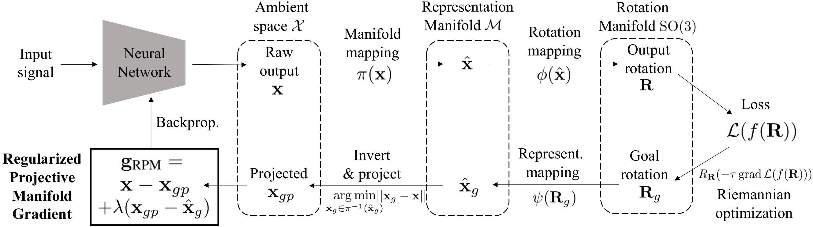
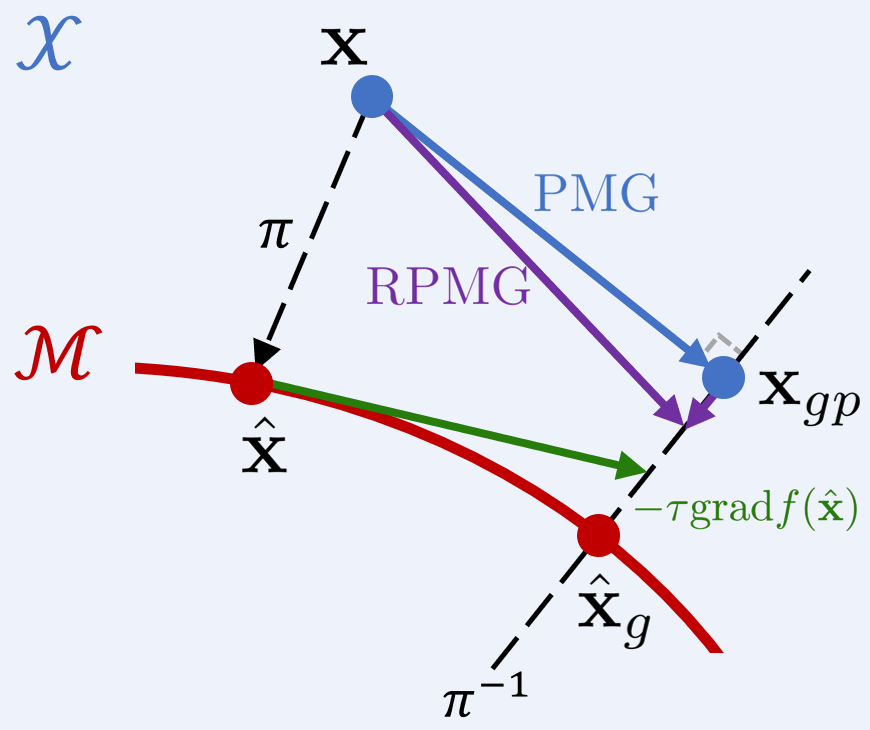
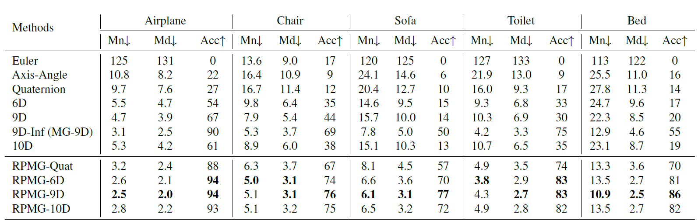
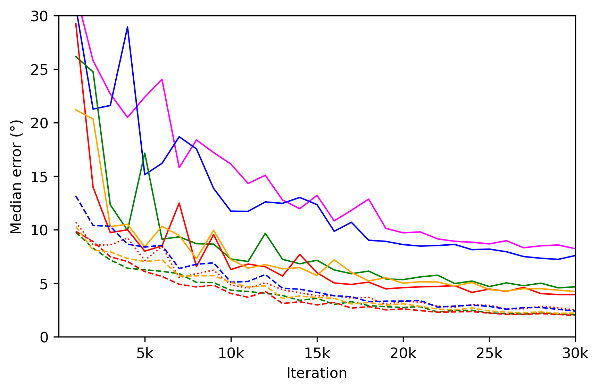
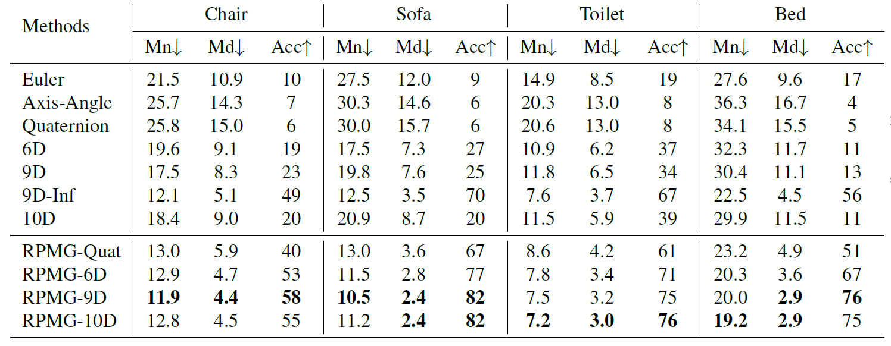
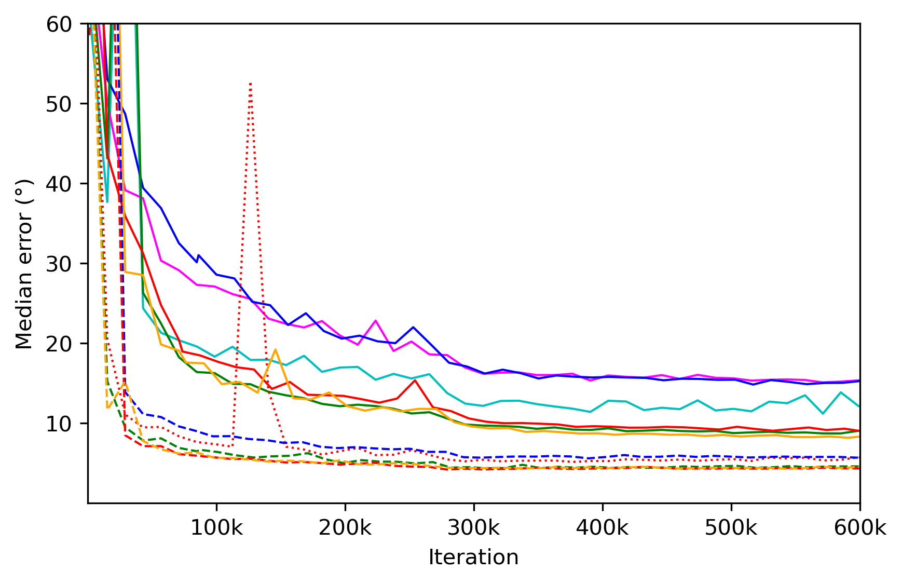
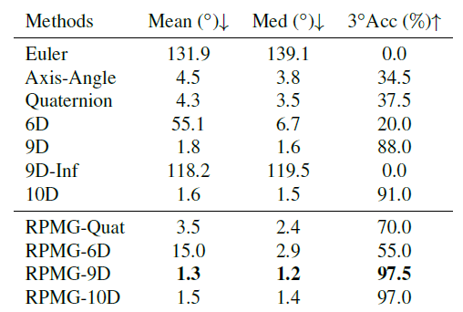
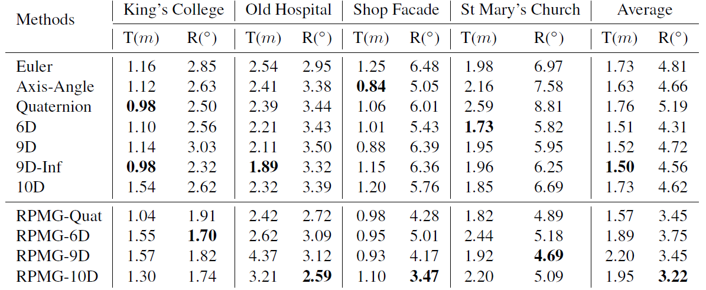
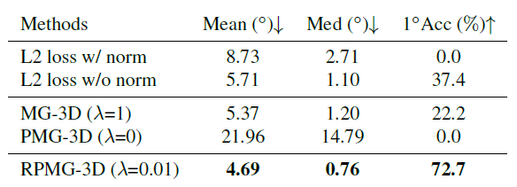

Projective Manifold Gradient Layer for Deep Rotation Regression
CVPR 2022
Jiayi Chen1, 2 Yingda Yin1 Tolga Birdal3, 4 Baoquan Chen1 Leonidas J. Guibas3 He Wang1†
1CFCS, Peking University 2Beijing Institute for General AI 3Stanford University 4Imperial College London
Abstract
Regressing rotations on SO(3) manifold using deep neural networks is an important yet unsolved problem. The gap between the Euclidean network output space and the non-Euclidean SO(3) manifold imposes a severe challenge for neural network learning in both forward and backward passes. While several works have proposed different regression-friendly rotation representations, very few works have been devoted to improving the gradient backpropagating in the backward pass. In this paper, we propose a manifold-aware gradient that directly backpropagates into deep network weights. Leveraging Riemannian optimization to construct a novel projective gradient, our proposed regularized projective manifold gradient (RPMG) method helps networks achieve new state-of-the-art performance in a variety of rotation estimation tasks. Our proposed gradient layer can also be applied to other smooth manifolds such as the unit sphere.
Method Overview
Figure 1: Regularized Projective Manifold Gradient Layer. Left: full pipeline. Right: Illustration. In the forward pass, the network predicts a raw output x, which is then transformed into a valid rotation R = ϕ(π(x)). We leave this forward pass unchanged and only modify the backward pass. In the backward pass, we first use Riemannian optimization to get a goal rotation Rg and map it back to ˆxg on the representation manifold M. After that we find the element xgp which is closest to the raw output in the inverse image of ˆxg, and finally get the gradient gRPM we want.
Results
Table 1: 3D object pose estimation from ModelNet40 point clouds. Left: a comparison of methods by mean, median, and 5◦ accuracy of (geodesic) errors after 30k training steps. Mn, Md and Acc are abbreviations of mean, median and 5◦ accuracy. Right: median test error of airplane in different iterations during training.
Table 2: 3D object pose estimation from ModelNet10 images. Left: a comparison of methods by mean, median, and 5◦ accuracy of (geodesic) errors after 600k training steps. Mn, Md and Acc are abbreviations of mean, median and 5◦ accuracy. Right: median test error of chair in different iterations during training.

Table 3: Self-supervised instance-level 3D object pose estimation
from ModelNet40 chair by chamfer distance loss. We report mean, median, and 3◦ accuracy of (geodesic)
errors after 30k training steps.

Table 4: Camera relocalization on Cambridge Landscape dataset. We report the median error of translation and rotation of the best checkpoint, which is chosen by minimizing the median error of rotation. We only care about the rotation error here, since we don't tune the loss weights for a fair comparison.

Table 5: Unit vector regression from ModelNet40 bottle point clouds. We report mean, median, and 1◦ accuracy of (geodesic)
errors after 30k training steps. We can find that
Bibtex
@article{chen2021projective,
title={Projective Manifold Gradient Layer for Deep Rotation Regression},
author={Chen, Jiayi and Yin, Yingda and Birdal, Tolga and Chen, Baoquan and Guibas, Leonidas and Wang, He},
journal={arXiv preprint arXiv:2110.11657},
year={2021}
}Contact
If you have any questions, please feel free to contact Jiayi Chen or He Wang.